경영지도사-1차-1교시(구) (2020-08-29 기출문제)
1과목: 중소기업관련법령
1. 중소기업기본법상 중소기업 옴부즈만에 관한 설명으로 옳은 것은?
- 임기는 3년으로 하되, 한 번만 연임할 수 있다.
- 업무에 관한 활동 결과보고서를 작성하여 매년 12월 말까지 규제개혁위원회와 중소벤처기업부 및 국회에 보고하여야 한다.
- 중소기업 및 규제 분야의 학식과 경험이 많은 자 중에서 중소벤처기업부장관이 위촉한다.
- 판사의 직에 5년 이상 있었던 사람은 중소기업 옴부즈만이 될 자격이 있다.
- 중소기업 옴부즈만에게 의견을 제출한 자가 그것을 이유로 차별을 받은 경우 중소벤처기업부장관에게 고충민원을 신청할 수 있다.
(정답률: 47%)

2. 중소기업기본법상 다른 국내기업의 주식 등을 소유하고 있는 경우 그 다른 국내기업과 지배기업 및 종속기업의 관계로 볼 수 있는 자에 해당하는 것은?
- 「중소기업창업 지원법」에 따른 중소기업창업투자회사
- 「여신전문금융업법」에 따른 신기술사업금융업자
- 「독점규제 및 공정거래에 관한 법률」에 따른 공시대상기업집단 소속회사
- 「벤처기업육성에 관한 특별조치법」에 따른 신기술창업전문회사
- 「산업교육진흥 및 산학연협력촉진에 관한 법률」에 따른 산학협력기술지주회사
(정답률: 40%)
3. 중소기업기본법상 중소벤처기업부장관이 중소기업 지원사업 통합관리시스템을 구축ㆍ운용하기 위하여 중앙행정기관의 장등에게 요청할 수 있는 사항에 해당하지 않는 것은?
- 「주민등록법」에 따른 주민등록번호
- 「신용정보의 이용 및 보호에 관한 법률」에 따른 신용정보
- 중소기업시책에 참여하는 기업의 지원효과 분석을 위하여 법령 등에 의한 해당 기업의 인증ㆍ확인 정보
- 당사자의 동의를 받은「소득세법」에 따른 원천징수이행상황신고서의 근로소득 간이세액 인원
- 「상업등기법」에 따른 회사 등기사항
(정답률: 29%)
4. 중소기업기본법상 중소벤처기업부장관이 중소기업시책에 참여하려는 중소기업자에 해당하는 지를 확인하기 위하여 국세청장에게 과세정보의 제출을 요청할 경우 그 요청 서면의 명시 사항이 아닌 것은?
- 상시근로자 수
- 매출액
- 주요 거래처
- 자산총액
- 주주현황 및 다른 법인에 대한 출자현황
(정답률: 53%)
5. 중소기업창업 지원법상 창업 또는 재창업에 해당하는 것은?
- 타인으로부터 사업 전부를 승계하여 승계 전의 사업과 같은 종류의 사업을 계속하는 경우
- 개인사업자인 중소기업자가 법인으로 전환하여 변경 전의 사업과 같은 종류의 사업을 계속하는 경우
- 부도 또는 파산 등으로 중소기업을 폐업하고 새로 중소기업을 설립하는 경우
- 법인의 조직변경 등 기업형태를 변경하여 변경 전의 사업과 같은 종류의 사업을 계속하는 경우
- 폐업 후 사업을 개시하여 폐업 전의 사업과 같은 종류의 사업을 계속하는 경우
(정답률: 50%)
6. 중소기업창업 지원법상 중소기업창업투자회사의 대주주의 행위로 허용되는 것은?
- 중소기업창업투자회사가 경영위기에 처한 상황에서 대주주 자신이 보유한 주식을 매입가격보다 낮은 가격으로 처분하는 행위
- 「상법」에 따른 권리의 행사에 해당하는 경우를 제외하고, 중소기업창업투자회사에 부당한 영향력을 행사하기 위하여 외부에 공개되지 아니한 자료 또는 정보의 제공을 요구하는 행위
- 중소기업창업투자회사로 하여금 위법행위를 하도록 요구하는 행위
- 금리, 수수료, 담보 등에 있어서 통상적인 거래조건과 비교하여 해당 중소기업창업투자회사에 현저하게 불리한 조건으로 제3자와의 거래를 요구하는 행위
- 경제적 이익 등 반대급부의 제공을 조건으로 다른 주주와 담합하여 중소기업창업투자회사의 투자활동 등 경영에 부당한 영향력을 행사하는 행위
(정답률: 34%)
7. 중소기업창업 지원법상 사업계획의 승인에 관한 설명으로 옳지 않은 것은?
- 제조업을 영위하고자 하는 창업자는 사업계획을 작성하여 시장ㆍ군수 또는 자치구청장의 승인을 받아 사업을 할 수 있다.
- 시장ㆍ군수 또는 자치구청장은 창업자로부터 사업계획의 승인신청을 받은 날부터 20일 내 승인여부를 알려야 하며, 이 기간 내 알리지 아니한 경우 20일이 지난 다음 날 거부한 것으로 본다.
- 이미 사업계획의 승인을 받은 공장건축면적의 20퍼센트 범위에서 증가는 시장ㆍ군수 또는 자치구청장의 변경 승인이 필요 없다.
- 창업자는 사업계획의 승인을 신청하기 전 시장ㆍ군수 또는 자치구청장에게 사업계획의 승인 가능성 등에 대하여 사전 협의를 요청할 수 있다.
- 기준공장면적률에 적합한 범위에서의 부대시설면적의 변경은 시장ㆍ군수 또는 자치구청장의 변경승인이 필요 없다.
(정답률: 34%)
8. 중소기업창업 지원법상 중소기업창업투자회사가 갖추어야 할 요건에 해당하지 않는 것은?
- 「상법」에 따른 주식회사로서 납입자본금이 20억원 이상이고, 차입금이 납입자본금의 100분의 20 미만일 것
- 임원이 파산 선고를 받고 복권되지 아니한 자에 해당하지 않을 것
- 대표이사 또는 임원이 금융거래 등 상거래에서 약정한 날짜 이내에 채무를 갚지 아니한 자로서, 변제 기일 3개월을 지난 채무가 1천만원을 초과하는 자가 아닐 것
- 창업투자회사와 투자자 간, 특정 투자자와 다른 투자자 간의 이해상충을 방지하기 위한 체계를 갖출 것
- 대주주가 최근 3년간 채무불이행 등으로 건전한 신용질서를 해친 사실이 없을 것
(정답률: 15%)
9. 중소기업창업 지원법상 금융 관련 법령을 위반하여 벌금 이상의 형을 선고받고 그 집행이 끝나거나 집행이 면제된 날부터 5년이 지나지 아니한 자는 중소기업창업투자회사로 등록하려는 회사의 임원이 될 수 없다. 이 때 금융 관련 법령에 해당되지 않는 것은?
- 「보험업법」
- 「상호저축은행법」
- 「자산유동화에 관한 법률」
- 「전자금융거래법」
- 「금융실명거래 및 비밀보장에 관한 법률」
(정답률: 27%)
10. 중소기업창업 지원법상 중소기업창업투자조합의 업무집행조합원이 그 조합에서 탈퇴할 수 있는 경우에 해당하는 것을 모두 고른 것은?
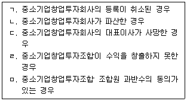
- ㄱ, ㄴ
- ㄴ, ㄷ
- ㄹ, ㅁ
- ㄱ, ㄴ, ㄷ
- ㄷ, ㄹ, ㅁ
(정답률: 47%)
11. 벤처기업육성에 관한 특별조치법상 신기술창업전문회사의 등록 취소에 관한 설명으로 옳지 않은 것은?
- 신기술창업전문회사에 대한 등록 취소권자는 중소벤처기업부장관이다.
- 신기술창업전문회사가 거짓의 방법으로 등록한 경우에는 반드시 등록을 취소하여야 한다.
- 신기술창업전문회사가 유한책임회사로 조직변경을 한 경우 등록이 취소될 수 있다.
- 「유사수신행위의 규제에 관한 법률」을 위반하여 출자자나 투자자를 모집하는 행위를 한 경우 등록이 취소될 수 있다.
- 신기술창업전문회사의 대표이사가 파산선고를 받고 복권되지 않은 경우 등록을 취소해야 한다.
(정답률: 34%)
12. 벤처기업육성에 관한 특별조치법상 벤처기업의 주주총회 결의에 반대하는 주주의 주식매수청구권이 인정되지 않는 경우는?
- 주식교환
- 소규모합병
- 신주발행에 의한 주식교환
- 간이합병
- 간이영업양도
(정답률: 38%)
13. 벤처기업육성에 관한 특별조치법상 신기술창업전문회사에 관한 설명으로 옳지 않은 것은?
- 정부출연연구기관은 신기술창업전문회사를 설립할 수 있다.
- 국공립연구기관이 설립한 신기술창업전문회사는 주주총회의 특별결의에 의하여만 기술사업화를 위한 자회사를 설립할 수 있다.
- 신기술창업전문회사와 그 회사가 설립한 자회사 사이에서는 인수ㆍ합병의 경우에도 상호 담보 제공을 할 수 없다.
- 신기술창업전문회사는「유사수신행위의 규제에 관한 법률」을 위반하여 출자자나 투자자를 모집하는 행위를 하여서는 아니 된다.
- 국공립연구기관은 신기술창업전문회사에 대한 투자나 출자로 발생한 수익금 등을 연구기관의 고유목적사업이나 연구개발 등의 용도로 사용하여야 한다.
(정답률: 20%)
14. 벤처기업육성에 관한 특별조치법상 벤처기업집적시설에 대하여 면제되는 부담금에 해당하는 것을 모두 고른 것은?
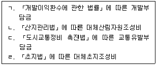
- ㄱ, ㄴ
- ㄴ, ㄷ
- ㄷ, ㄹ
- ㄱ, ㄴ, ㄹ
- ㄱ, ㄴ, ㄷ, ㄹ
(정답률: 36%)
15. 벤처기업육성에 관한 특별조치법상 벤처기업에 대한 특례에 관한 설명으로 옳지 않은 것은?
- 벤처기업 당시 이루어진 산업재산권등의 출자행위는 해당 기업이 벤처기업에 해당하지 아니하게 된 경우에도 계속하여 유효한 것으로 본다.
- 벤처기업집적시설에 입주하였던 벤처기업이 벤처기업에 해당하지 아니하게 된 경우에는 계속하여 벤처기업집적시설에 입주할 수 없다.
- 대한민국에 6개월 이상 주소 또는 거소를 두지 아니한 외국인에 의한 벤처기업의 주식취득에 대하여는 해당 벤처기업의 정관에 의하여 이를 제한할 수 있다.
- 주식회사인 벤처기업이 정관의 정함에 따라 주주총회의 결의를 거쳐 일정 요건을 구비한 자에게 주식매수선택권을 부여한 행위는 해당 기업이 벤처기업에 해당하지 아니하게 된 경우에도 계속하여 유효한 것으로 본다.
- 주식회사인 벤처기업이 다른 주식회사와 합병을 하는 경우 합병 후 존속하는 회사가 소멸회사의 발행주식총수 중 의결권 있는 주식의 100분의 80 이상을 보유하는 경우에는 그 소멸하는 회사의 주주총회의 승인은 이사회의 승인으로 갈음할 수 있다.
(정답률: 29%)
16. 벤처기업육성에 관한 특별조치법상 전담회사에 관한 설명으로 옳은 것은?
- 전담회사는 사채를 발행할 수 없다.
- 전담회사는 정부로부터 자금을 차입할 수 없다.
- 전담회사에 관하여 이 법에 규정한 것 외에는「상법」중 유한책임회사에 관한 규정을 준용한다.
- 해외벤처투자자금의 유치 지원 업무는 전담회사의 영위 업무에 해당한다.
- 전담회사의 정관 변경은 중소벤처기업부장관의 인가 사항에 해당하지 않는다.
(정답률: 22%)
17. 중소기업진흥에 관한 법률상 경영지도사 또는 기술지도사의 등록 취소사유에 해당하지않는 것은?
- 최초 등록 후 5년이 경과한 뒤 갱신등록을 하지 않은 경우
- 금고 이상의 형의 집행유예를 선고받고 그 유예기간 중에 있는 경우
- 지도와 관련하여 알게 된 비밀을 다른 사람에게 누설한 경우
- 지도사등록증을 다른 사람에게 대여한 경우
- 지도와 관련하여 중대한 과실로 다른 사람에게 중대한 손해를 입힌 경우
(정답률: 36%)
18. 중소기업진흥에 관한 법률상 중소기업 협동화 사업에 관한 설명으로 옳지 않은 것은?
- 중소벤처기업부장관은 중소기업자의 집단화와 시설공동화 등을 위한 중소기업 협동화기준을 정하고 고시하여야 한다.
- 협동화기준에 따라 협동화실천계획을 세워 시행하려는 자는 중소벤처기업부장관의 승인을 받아야 한다.
- 중소기업자등이 국외에 조성된 공업용지를 장기 임차하여 협동화사업을 실시하려는 경우에는 중소벤처기업부장관의 승인을 받지 않아도 된다.
- 중소벤처기업부장관은 협동화실천계획의 승인을 받은 자가 사업목적을 달성할 수 없거나 지원자금을 다른 목적으로 사용한 경우 그 승인을 취소하고 지원자금의 원리금을 회수할 수 있다.
- 중소기업자등은 단지조성사업을 시행하기 위하여 필요한 경우에는 타인의 토지를 일시 사용할 수 있다.
(정답률: 40%)
19. 중소기업진흥에 관한 법률상 가업승계에 관한 설명으로 옳지 않은 것은?
- 해당 중소기업의 동일성이 유지되는 한 친족 이외의 자가 증여를 통하여 그 기업의 소유권을 취득하는 경우도 가업승계에 해당한다.
- 가업승계를 한 자는 해당 기업의 사업을 10년 이상 계속하여 유지하여야 한다.
- 기업유지기간 중 가업승계자의 책임 없는 사유로 총 1년 이내의 기간 동안 휴업한 경우에는 사업을 계속한 것으로 본다.
- 가업승계를 한 자는 5년 동안 평균 상시종업원 수를 승계 전 5년간 평균 상시종업원 수의 100분의 70 이상으로 유지하여야 한다.
- 가업승계를 한 자가 기존 업종에 다른 업종을 추가하여 사업을 하는 경우에는 추가된 업종의 매출액이 총매출액의 100분의 50 미만인 경우에만 같은 업종에 종사한 것으로 본다.
(정답률: 27%)
20. 중소기업진흥에 관한 법률상 중소기업의 자동화지원사업으로 추진할 수 있는 사업에 해당하지 않는 것은?
- 중소기업의 자동화 촉진을 위한 설비 보급
- 중소기업의 자동화 촉진을 위한 회사지배구조의 지정
- 중소기업의 자동화를 촉진하기 위한 자금 지원
- 중소기업의 자동화를 위한 시범사업과 표준화
- 중소기업의 자동화에 관한 전문인력의 양성
(정답률: 48%)
21. 중소기업진흥에 관한 법률상 중소기업자의 원활한 협업 수행을 위하여 정부가 할 수 있는 협업지원사업에 해당하는 것을 모두 고른 것은?
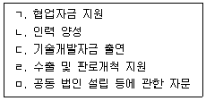
- ㄱ, ㄴ, ㄷ
- ㄱ, ㄷ, ㄹ
- ㄴ, ㄷ, ㅁ
- ㄴ, ㄷ, ㄹ, ㅁ
- ㄱ, ㄴ, ㄷ, ㄹ, ㅁ
(정답률: 15%)
22. 중소기업진흥에 관한 법률상 중소기업매출채권보험계정(이하 '계정'이라 함)에 관한 설명으로 옳지 않은 것은?
- 계정을 조성하는 재원으로는 정부, 중소기업매출채권보험 계약자 및 그 외의 자의 출연금 등이 있다.
- 계정은 중소기업매출채권보험금의 지급 등을 위한 용도로 운용한다.
- 계정의 여유금으로 상장회사의 주식을 취득할 수 있다.
- 신용보증기금은 계정의 회계를 다른 회계와 구분하여 회계 처리하여야 한다.
- 계정의 결산상 이익금이 생겼을 때에는 전액 적립하여야 한다.
(정답률: 36%)
23. 중소기업 기술혁신 촉진법상 중소기업기술정보진흥원의 영위 사업에 해당하지 않는 것은?
- 중소기업 기술혁신을 위한 정책연구 및 중장기 기획
- 중소기업 정보화 촉진 관련 정보기술의 보급 및 평가
- 정보화경영 표준모델의 개발ㆍ보급ㆍ확산 및 표준모델과의 부합화 지원
- 중소기업 재직자의 작업능력 향상을 위한 공동교육훈련
- 중소기업 정보화 기반조성 및 수준평가
(정답률: 27%)
24. 중소기업 기술혁신 촉진법상 중소기업기술혁신추진위원회(이하 '위원회'라 함)에 관한 설명으로 옳지 않은 것은?
- 위원장은 중소벤처기업부 소속 국장급 공무원 중에서 중소벤처기업부장관이 임명한다.
- 위원회는 위원장 1명을 포함한 20명 이상 30명 이하의 위원으로 구성한다.
- 위원회 위원 중 공무원이 아닌 위원의 임기는 2년으로 하되, 연임할 수 있다.
- 위원회의 사무처리를 위하여 위원회에 간사 1인을 두되, 간사는 중소벤처기업부 소속 공무원중에서 위원장이 지명한다.
- 중소벤처기업부장관은 위원회의 민간위원이 직무와 관련된 비위사실이 있는 경우에는 해당위원을 해촉할 수 있다.
(정답률: 36%)
25. 중소기업 기술혁신 촉진법상 중소벤처기업부장관이 수립하는 중소기업 기술혁신 촉진계획의 심의기구에 해당하는 것은?
- 한국벤처투자조합
- 중소기업기술연구회
- 국가과학기술자문회의
- 중소기업기술진흥전문기관
- 신기술창업전문회사
(정답률: 40%)
26. 중소기업 기술혁신 촉진법상 기술혁신 촉진 지원사업에 대한 참여 제한사유에 해당하지않는 것은?
- 연구개발의 결과가 극히 불량하여 중소벤처기업부장관이 실시하는 평가에 따라 실패한 사업으로 결정된 경우
- 출연금을 사용용도 외의 용도에 사용하였거나 사용명세를 거짓으로 보고한 경우
- 정당한 사유없이 연구개발 결과물인 지식재산권을 소속 임직원 또는 소속 외의 연구책임자ㆍ연구원 명의로 출원하거나 등록한 경우
- 중소벤처기업부장관의 승인을 얻지 않고「과학기술기본법」에 따른 국가연구개발사업 과제에 참여한 경우
- 연구개발 자료나 결과를 위조 또는 변조하거나 표절하는 등의 연구부정행위를 한 경우
(정답률: 20%)
27. 여성기업지원에 관한 법률상 차별적 관행 시정에 관한 설명이다. ( )에 들어갈 숫자로 옳은 것은?
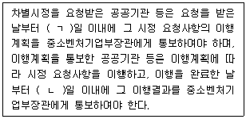
- ㄱ: 30, ㄴ: 30
- ㄱ: 30, ㄴ: 60
- ㄱ: 60, ㄴ: 60
- ㄱ: 60, ㄴ: 90
- ㄱ: 90, ㄴ: 90
(정답률: 34%)
28. 여성기업지원에 관한 법률상 협동조합기본법에 따른 협동조합이 여성기업으로 인정받기 위하여 갖추어야 할 요건으로 옳지 않은 것은? (단, 협동조합은 사회적 협동조합이 아님)
- 총 조합원 수의 과반수가 여성일 것
- 총 출자좌수의 과반수를 여성인 조합원이 출자하였을 것
- 여성 등 취약계층에게 사회서비스 또는 일자리를 제공할 것
- 이사장이 여성인 조합원일 것
- 이사장을 포함한 총 이사의 과반수가 여성인 조합원일 것
(정답률: 36%)
29. 소상공인 보호 및 지원에 관한 법률상 상시근로자에 포함되는 근로자는?
- 임원
- 「소득세법 시행령」에 따른 일용근로자
- 3개월 이내의 기간을 정하여 근로하는 근로자
- 「기초연구진흥 및 기술개발지원에 관한 법률」에 따라 인정받은 기업부설연구소의 연구전담요원
- 「근로기준법」에 따른 단시간근로자로서 1개월 동안의 소정 근로시간이 60시간 이상인 사람
(정답률: 36%)
30. 소상공인 보호 및 지원에 관한 법률상 소상공인 지원에 관한 설명으로 옳지 않은 것은?
- 정부는「감염병의 예방 및 관리에 관한 법률」제2조 제1호에 따른 감염병의 발생으로 영업에 심대한 피해를 입은 소상공인에 대하여 생계비 등 피해 복구를 위한 지원을 할 수 있다.
- 중소벤처기업부장관은 재난으로 인한 소상공인의 피해 복구를 위하여 임대인에게 임대료를 지원할 수 있다.
- 중소벤처기업부장관은 소상공인의 입지 및 업종 선정을 지원하기 위하여 상권정보시스템을 구축ㆍ운영할 수 있다.
- 중소벤처기업부장관은 소상공인의 경영안정과 성장을 지원하기 위하여 소상공인 전용 모바일 상품권의 발행 및 유통 활성화 지원 사업을 할 수 있다.
- 정부는 고용보험에 가입한 소상공인에 대하여 고용보험료의 일부를 예산의 범위에서 지원할 수 있다.
(정답률: 40%)
31. 중소기업 사업전환 촉진에 관한 특별법상 주식회사인 승인기업에 대하여 상법 규정이 준용되는 경우를 모두 고른 것은?
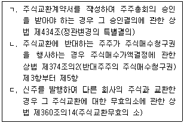
- ㄱ
- ㄷ
- ㄱ, ㄴ
- ㄴ, ㄷ
- ㄱ, ㄴ, ㄷ
(정답률: 34%)
32. 중소기업 사업전환 촉진에 관한 특별법상 중소벤처기업부장관의 사업전환계획 승인 취소사유에 해당하지 않는 것은?
- 거짓이나 그 밖의 부정한 방법으로 사업전환계획의 승인을 받은 경우
- 중소벤처기업부장관의 승인 없이 사업전환계획을 변경한 경우
- 휴업ㆍ폐업 또는 파산 등으로 6개월 이상 기업활동을 하지 아니하는 경우
- 승인기업이 사업전환계획의 승인을 받은 날부터 6개월 이내에 정당한 이유없이 사업전환계획을 추진하지 아니하는 경우
- 승인기업의 간이합병에 관한 이사회 결의에 반대하는 주주가 서면으로 합병에 반대하는 의사를 통지한 경우
(정답률: 36%)
33. 중소기업 사업전환 촉진에 관한 특별법상 중소기업사업전환촉진계획에 포함되지 않는 것은?
- 이 법의 적용대상이 되는 중소기업자의 업종ㆍ규모 등에 관한 사항
- 중소기업 사업전환정책의 추진방향에 관한 사항
- 사업전환을 지원하기 위한 방안에 관한 사항
- 사업전환을 촉진하기 위한 제도개선에 관한 사항
- 기술평가 및 기술금융지원에 관한 사항
(정답률: 44%)
34. 중소기업 사업전환 촉진에 관한 특별법상 주식교환 시 주식교환계약서에 포함되어야 하는 사항이 아닌 것은?
- 사업전환의 내용
- 자기주식의 취득 방법ㆍ가격 및 시기
- 교환할 주식의 가액의 총액ㆍ평가ㆍ종류 및 수량
- 주식교환 반대주주의 주식매수청구권 행사시기
- 주식교환을 할 날
(정답률: 29%)
35. 중소기업 인력지원 특별법상 중소벤처기업부장관이 수립하는 중소기업 인력지원 기본계획에 포함되는 사항을 모두 고른 것은?
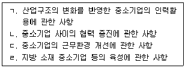
- ㄱ, ㄴ
- ㄱ, ㄷ
- ㄴ, ㄹ
- ㄱ, ㄷ, ㄹ
- ㄱ, ㄴ, ㄷ, ㄹ
(정답률: 8%)
36. 중소기업 인력지원 특별법상 인력지원을 받을 수 있는 업종은? (단, 업종의 분류는 한국표준산업분류를 기준으로 함)
- 부동산업
- 무도장 운영업
- 무도유흥 주점업
- 일반유흥 주점업
- 골프연습장 운영업
(정답률: 34%)
37. 중소기업 인력지원 특별법상 해당 직종과 관련된 분야에서 신기술에 기반한 창업을 하려는 경우 자금 등의 우선 지원 대상이 아닌 사람은?
- 「중소기업 인력지원 특별법」에 따른 인재육성형 중소기업에 10년 이상 종사한 사람
- 「국가기술자격법」에 따라 국가기술자격을 취득하고 같은 분야의 중소기업에 10년 이상 종사한 사람
- 「숙련기술장려법」에 따른 대한민국명장으로서 선정 당시와 같은 분야의 중소기업에 3년 이상 종사한 사람
- 「숙련기술장려법」에 따른 국내기능경기대회 및 국제기능올림픽대회 입상자로서 같은 분야의 중소기업에 5년 이상 종사한 사람
- 중소기업에서 같은 분야 및 직종의 생산업무에 15년 이상 종사한 사람
(정답률: 40%)
38. 중소기업 인력지원 특별법상 중소기업 청년근로자에 관한 설명이다. ( )에 들어갈 숫자로 옳은 것은?
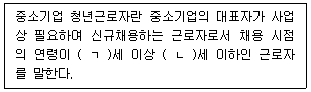
- ㄱ: 15, ㄴ: 30
- ㄱ: 15, ㄴ: 34
- ㄱ: 18, ㄴ: 30
- ㄱ: 18, ㄴ: 34
- ㄱ: 20, ㄴ: 40
(정답률: 48%)
39. 장애인기업활동 촉진법상 장애인기업종합지원센터를 설치할 수 있는 주체는?
- 보건복지부
- 지방자치단체
- 중소벤처기업부
- 한국장애경제인협회
- 장애인기업활동촉진위원회
(정답률: 48%)
40. 장애인기업활동 촉진법상 장애인기업의 확인에 관한 설명으로 옳은 것은?
- 거짓이나 그 밖의 부정한 방법으로 장애인기업의 확인을 받은 경우 장애인기업의 확인을 취소할 수 있다.
- 폐업 등의 사유로 기업활동을 하지 아니하게 된 경우 장애인기업 확인을 취소하여야 한다.
- 장애인기업 확인의 유효기간은 장애인기업 확인서의 발급일부터 3년으로 한다.
- 장애인기업의 확인이 취소된 자는 장애인기업의 확인이 취소된 날부터 1년 내에는 장애인기업 확인의 신청을 할 수 없다.
- 장애인기업 확인 취소 사유에 해당하는지 여부를 점검하기 위한 자료제출 요구 시 장애인기업의 확인을 받은 자가 거짓된 자료를 제출한 경우 3천만원 이하의 벌금에 처한다.
(정답률: 50%)
2과목: 경영학
41. 경영이론에 관한 설명으로 옳지 않은 것은?
- 시스템이론은 인간행동의 영향 요소 간 복잡한 상호작용의 중요성을 강조한다.
- 상황적합이론은 경영에 유일 최선의 방법은 없고 모든 조직에 일률적으로 보편적 경영원칙을 적용할 수는 없다고 주장한다.
- 욕구단계설에서 사람이 충족시키고자 하는 욕구는 낮은 수준에서 높은 수준으로 올라간다.
- 계량경영은 경영의사결정에 계량적 기법의 적용을 강조한다.
- 관료적 조직론에 의하면 생산성은 작업자들의 사회적, 심리적 조건이나 감독방식에 의존한다.
(정답률: 67%)
42. 호손(Hawthorne)연구의 내용으로 옳은 것은?
- 생산성과 표준화된 작업조건은 직접적인 관련이 있다.
- 작업자들의 행동이 관찰되거나 특별한 관심의 대상이 되는 것은 생산성과 관련이 없다.
- 임금, 노동시간 등 근로조건의 기술적, 경제적 측면에 초점을 두었다.
- 비공식 조직을 지배하는 감정의 논리가 생산성에 영향을 미친다.
- 공식조직의 업무체계 강화는 생산성의 향상으로 이어진다.
(정답률: 77%)
43. 포드(H. Ford)는 기업의 목적을 사회 대중에 대한 봉사로 보고 포디즘(Fordism)을 주장하였는데 포디즘의 기본원리로 옳은 것은?
- 고가격 고임금
- 저가격 고임금
- 고가격 저임금
- 저가격 최저임금
- 고가격 최저임금
(정답률: 69%)
44. 바나드(C. Barnard)가 주장한 조직이론에 해당하는 설명이 아닌 것은?
- 조직은 여러 하부ㆍ상부시스템들과 연결된 복합시스템이다.
- 조직의 구성원은 경제적 보상을 최대화하기 위하여 생산을 극대화시킨다.
- 조직은 외부환경(투자자, 협력업체, 소비자)과도 좋은 관계를 유지해야 한다.
- 조직의 명령은 구성원이 수용할 때 공헌으로 이어진다.
- 조직 구성원들은 서로 상호작용하면서 협동한다.
(정답률: 73%)
45. 페이욜(H. Fayol)이 관리이론에서 주장한 경영관리의 14개 기본원칙에 해당하지 않는 것은?
- 업무의 분화
- 명령의 일원화
- 방향의 단일화
- 기술적 훈련, 역량 그리고 전문성에 근거한 선발
- 개인보다 조직 이해의 우선
(정답률: 54%)
46. 테일러(F. Taylor)의 과학적 관리법(Scientific Management)에 관한 설명으로 옳지 않은 것은?
- 작업방식의 과학적 연구
- 과학적인 근로자 선발 및 훈련
- 관리활동의 통합
- 차별적 성과급제
- 합리적 경제인을 가정
(정답률: 50%)
47. 사이먼(H. Simon)이 주장한 의사결정의 제한된 합리성 모델(bounded rationality model)의 내용에 해당하지 않는 것은?
- 규범적 모델
- 단순화 전략의 사용
- 불완전하고 부정확한 정보사용
- 만족해(satisficing solution)를 선택
- 모든 가능한 대안을 고려하지 못함
(정답률: 63%)
48. 허즈버그(F. Herzberg)의 2요인이론에서 위생요인에 해당하는 것은?
- 성취
- 인정
- 책임감
- 성장과 발전
- 감독자
(정답률: 75%)
49. 주식회사에 관한 설명으로 옳지 않은 것은?
- 다수의 출자자로부터 대규모 자본조달이 용이하다.
- 소유와 경영의 인적 통합이 이루어진다.
- 주주총회는 최고의사결정기구이다.
- 주주의 유한책임을 전제로 한다.
- 자본의 증권화 제도를 통하여 자유롭게 소유권을 이전할 수 있다.
(정답률: 75%)
50. 기업의 외부환경을 일반환경과 과업환경으로 구분할 때 과업환경에 해당하는 것은?
- 경제적 환경
- 정치적ㆍ법적 환경
- 인구통계적 환경
- 사회ㆍ문화적 환경
- 경쟁자 환경
(정답률: 58%)
51. 상호관련이 없는 이종 기업의 주식을 집중 매입하여 합병함으로써 기업 규모를 확대시켜 대기업의 이점을 추구하려는 다각적 합병은?
- 콤비나트(combinat)
- 다국적 기업(multinational corporation)
- 조인트 벤처(joint venture)
- 콘글로머리트(conglomerate)
- 카르텔(cartel)
(정답률: 67%)
52. 기업이 제품과 서비스를 생산하기 위하여 사용하는 구체적인 활동이나 방법을 규제하는 통제의 유형은?
- 운영적 통제
- 전략적 통제
- 전술적 통제
- 관료적 통제
- 시장 통제
(정답률: 57%)
53. 윤리적 의사결정 기준 중 공리주의 접근법에 관한 설명이 아닌 것은?
- 최대 다수의 최대 행복을 지향한다.
- 금전적 측정이 곤란한 경우에는 비용-효익 분석을 적용할 수 없다.
- 다수집단에 속한 사람들의 권리가 소수집단에 속한 사람들의 권리에 우선한다.
- 이익극대화, 능률성 추구를 정당한 것으로 본다.
- 결정 또는 행동이 정당성, 공정성, 공평성의 원칙을 전제로 한다.
(정답률: 32%)
54. 맥킨지(McKinsey)가 제시한 조직문화 7S요소에 해당하지 않는 것은?
- 공유가치(shared value)
- 정신(spirit)
- 구조(structure)
- 전략(strategy)
- 구성원(staff)
(정답률: 60%)
55. 분권적 권한(decentralized authority)에 관한 설명으로 옳지 않은 것은?
- 종업원들에게 더 많은 권한위임이 발생한다.
- 의사결정이 신속하다.
- 소비자에 대한 반응이 늦다.
- 분배과정이 복잡하다.
- 최고경영진의 통제가 약하다.
(정답률: 57%)
56. 기업조직 내의 각 사업부가 각기 다른 전략을 동시에 채용하는 전략유형은?
- 확장전략
- 성장전략
- 축소전략
- 안정전략
- 결합전략
(정답률: 63%)
57. 집단의사결정의 장점으로 볼 수 없는 것은?
- 구성원으로부터 다양한 정보를 얻을 수 있다.
- 다각도로 문제에 접근할 수 있다.
- 구성원의 수용도와 응집력이 높아진다.
- 의사결정에 참여한 구성원들의 교육효과가 높게 나타난다.
- 집단사고의 함정에 빠질 가능성이 배제된다.
(정답률: 74%)
58. 기업이 보유하고 있는 매출채권을 매도하는 방식으로 이루어지는 단기자금조달 방법은?
- 신용거래(trade credit)
- 회전신용약정(revolving credit agreement)
- 팩토링(factoring)
- 상업어음(commercial paper)
- 무담보대출(unsecured loan)
(정답률: 36%)
59. 포터(M. Porter)의 경쟁우위의 유형과 경쟁의 범위를 기준으로 한 본원적 전략(generic strategy)에 해당하는 유형을 모두 고른 것은?
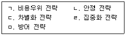
- ㄱ, ㄴ, ㄷ
- ㄱ, ㄴ, ㅁ
- ㄱ, ㄷ, ㄹ
- ㄴ, ㄷ, ㄹ
- ㄴ, ㄹ, ㅁ
(정답률: 75%)
60. 동기부여에 관한 연구자와 그 이론의 연결이 옳지 않은 것은?
- 맥클리랜드(D. McClelland) - 성취동기이론
- 브룸(V. Vroom) - Z이론
- 아담스(J. Adams) - 공정성이론
- 알더퍼(C. Alderfer) - ERG이론
- 맥그리거(D. McGregor) - XY이론
(정답률: 80%)
61. 고성과 작업시스템이 성공적으로 이루어지기 위한 조건이 아닌 것은?
- 분권화된 의사결정을 배제한다.
- 종업원들이 선발에 참여한다.
- 종업원 보상은 조직의 재무성과와 연동된다.
- 종업원들이 다양한 기술을 사용할 수 있도록 업무가 설계된다.
- 지속적인 교육훈련이 이루어진다.
(정답률: 63%)
62. 조직 내에는 꼭 필요한 핵심 기능을 보유하고 그 외의 기능들은 상황에 따라 다른 조직을 활용함으로써 조직의 유연성을 확보하고자 하는 조직구조는?
- 매트릭스 조직
- 라인-스태프 조직
- 사업부제 조직
- 네트워크 조직
- 라인 조직
(정답률: 54%)
63. 계획화(planning)의 단점이 아닌 것은?
- 시간과 비용의 수반
- 의사결정의 지연
- 미래 지향적 사고
- 경직성 유발
- 동태적 환경에서의 한계
(정답률: 54%)
64. 경영관리 과정상 통제(controlling)의 목적에 해당하는 것을 모두 고른 것은?
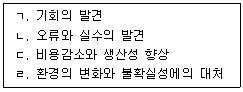
- ㄱ, ㄴ
- ㄷ, ㄹ
- ㄱ, ㄷ, ㄹ
- ㄴ, ㄷ, ㄹ
- ㄱ, ㄴ, ㄷ, ㄹ
(정답률: 53%)
65. 사업부별 조직구조에 관한 설명으로 옳지 않은 것은?
- 오늘날 대부분의 다국적 기업들이 채택하고 있다.
- 각 사업부는 독립적인 수익단위 및 비용단위로 운영된다.
- 성과에 대한 책임 소재가 불분명하다.
- 시장변화 또는 소비자 욕구변화에 비교적 빠르게 대처할 수 있다.
- 사업부문별로 권한과 책임이 부여된다.
(정답률: 58%)
66. 생산에 필요한 요소를 제때에 투입함으로써 재고가 없도록 하는 생산 방식은?
- 유연생산시스템(FMS: flexible manufacturing system)
- 컴퓨터 통합생산(CIM: computer integrated manufacturing)
- 스마트 팩토리(smart factory)
- 무결점운동(zero defects program)
- 적시생산(JIT: just in time)
(정답률: 71%)
67. 마케팅의 4P에 해당하지 않는 것은?
- 가격
- 제품
- 유통
- 소비자
- 촉진
(정답률: 63%)
68. 손익분기점(break-even point)이란?
- 고정비와 변동비가 일치하는 점
- 부채와 자본이 일치하는 점
- 부채와 자산이 일치하는 점
- 총비용과 총수익이 일치하는 점
- 총비용과 총이익이 일치하는 점
(정답률: 60%)
69. 생산관리에서 수요예측 방법 중 양적 기법(quantitative method)이 아닌 것은?
- 이동평균법(moving average)
- 델파이(Delphi) 기법
- 지수평활법(exponential average)
- 회귀모형(regression model)
- 시계열분해법(decomposition of a time series)
(정답률: 65%)
70. 많은 개별 고객들의 요구를 만족시키기 위해 제품들을 맞춤화하여 생산하는 것은?
- 서비타이제이션(servitization)
- 가치 공학(value engineering)
- 린 생산(lean production)
- 매스 커스터마이제이션(mass customization)
- 대량 생산(mass production)
(정답률: 54%)
71. (주)경지사의 연간 수요는 10,000단위, 회당 주문비용은 200원, 연간 단위당 재고유지비용은 400원일 경우 경제적 주문량(EOQ)은? (단, 주어진 조건 외에 다른 조건은 고려하지 않음)
- 100단위
- 200단위
- 300단위
- 400단위
- 500단위
(정답률: 42%)
72. 직무관리에 관한 설명으로 옳지 않은 것은?
- 직무를 수행하는데 필요한 지식과 능력, 숙련도, 책임 등과 같은 직무상의 요건을 체계적으로 결정하는 과정을 직무분석(job analysis)이라 한다.
- 직무기술서(job description)는 책임과 의무, 근로조건, 다른 직무와의 관계 등을 정리한 것이다.
- 직무명세서(job specification)는 특정한 업무를 수행하는데 필요한 지식, 기술, 능력 등을 요약한 것이다.
- 직무순환(job rotation)은 여러 기능의 습득을 위해 종업원들에게 다양한 직무를 수행하도록 한다.
- 직무충실화(job enrichment)에서는 종업원이 수행하는 과업의 숫자는 증가하나 의사결정 권한이나 책임은 별로 증가하지 않는다.
(정답률: 67%)
73. 직무급(job-based pay)에서 중요하게 고려하는 요소는?
- 직무의 상대적 가치
- 기업의 매출 성과
- 근속연수
- 최저생계비
- 직무수행 능력
(정답률: 47%)
74. 조직 구성원이 리더의 새로운 이상에 의해 태도와 동기가 변화하고 자발적으로 자신과 조직의 변화를 이끌어 낼 수 있도록 하는 리더십은?
- 거래적 리더십(transactional leadership)
- 수퍼리더십(super-leadership)
- 변혁적 리더십(transformational leadership)
- 서번트 리더십(servant leadership)
- 진성 리더십(authentic leadership)
(정답률: 67%)
75. 높은 성과를 올리고 있는 회사와 비교ㆍ분석하여 창조적 모방을 통해 개선하고자 하는 경영혁신 기법은?
- 동료그룹(peer group)평가
- 벤치마킹(benchmarking)
- 구조조정(restructuring)
- 6시그마(six sigma)
- 종합적 품질경영(TQM: total quality management)
(정답률: 71%)
76. 직접적인 대면 접촉에 의한 전통적인 구전(word of mouth)과 비교할 때, 인터넷을 매개로 하는 온라인 구전의 특성에 해당하는 것을 모두 고른 것은?
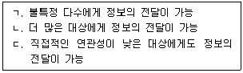
- ㄱ
- ㄱ, ㄴ
- ㄱ, ㄷ
- ㄴ, ㄷ
- ㄱ, ㄴ, ㄷ
(정답률: 69%)
77. 지식을 형식지와 암묵지로 구분할 때 암묵지의 특징으로 볼 수 없는 것은?
- 언어로 표현 가능한 객관적 지식
- 경험을 통해 몸에 밴 지식
- 은유를 통한 전달
- 다른 사람에게 전이하기가 어려움
- 노하우, 이미지, 숙련된 기능
(정답률: 63%)
78. 기업내 판매, 생산, 회계, 인사 등 여러 부문의 데이터를 일원화하여 관리함으로써 경영자원을 효율적으로 운용할 수 있도록 하는 기법은?
- 전사적 자원관리(ERP: enterprise resource planning)
- 공급사슬관리(SCM: supply chain management)
- 자재소요계획(MRP: material requirements planning)
- PERT(program evaluation and review technique)
- 컴퓨터지원생산(CAM: computer-aided manufacturing)
(정답률: 63%)
79. 판매자가 비용을 지불하거나 통제하지 않고 개인, 제품, 조직에 대한 정보를 언론 매체가 일반 보도로 다루도록 함으로써 무료 광고 효과를 얻는 것은?
- PPL(product placement) 광고
- 바이럴 마케팅(viral marketing)
- 블로깅(blogging)
- 퍼블리시티(publicity)
- 팟캐스팅(podcasting)
(정답률: 59%)
80. 정보를 자신의 컴퓨터가 아닌 인터넷에 연결된 다른 컴퓨터들을 이용하여 처리하는 기술은?
- 매시업(mashup) 서비스
- 클라우드 컴퓨팅(cloud computing)
- 사물인터넷(IoT)
- 크라우드소싱(crowdsourcing)
- 정보 사일로(information silo)
(정답률: 67%)
3과목: 회계학개론
81. 유용한 재무정보의 질적특성에 관한 설명으로 옳지 않은 것은?
- 재무정보가 유용하기 위해서는 목적적합해야 하고 나타내고자 하는 바를 충실하게 표현해야 한다.
- 근본적 질적특성은 목적적합성과 표현충실성이다.
- 재무정보가 예측가치를 갖기 위해서 그 자체가 예측치 또는 예상치이어야 한다.
- 때로는 하나의 보강적 질적특성이 다른 질적특성의 극대화를 위해 감소되어야 할 수도 있다.
- 원가는 재무보고로 제공될 수 있는 정보에 대한 포괄적 제약요인이다.
(정답률: 39%)
82. 재무제표의 요소에 관한 설명으로 옳은 것은?
- 미래의 사건으로 기업이 통제할 수 있게 될 경제적 자원도 자산이 될 수 있다.
- 본인이 통제하고 대리인이 관리하는 경제적 자원은 대리인의 자산이다.
- 부채는 과거사건의 결과로 기업이 경제적 자원을 이전해야 하는 미래의무이다.
- 자본은 자산이나 부채의 정의와 관계없이 독자적으로 정의된다.
- 기업이 책임을 회피할 수 있는 실제 능력이 없어야만 부채로 기록한다.
(정답률: 24%)
83. 다음 내용과 관련된 재무제표 요소의 측정기준은?
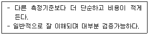
- 공정가치
- 현행원가
- 자산의 사용가치
- 역사적 원가
- 부채의 이행가치
(정답률: 57%)
84. (주)한국의 재무상태표 일부는 다음과 같다. 20×2년도 상품에 대한 매출원가가 ￦1,000인 경우 (주)한국이 공급자에게 지급한 현금유출액은?
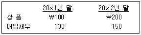
- ￦880
- ￦920
- ￦1,000
- ￦1,080
- ￦1,120
(정답률: 36%)
85. 포괄손익계산서에 표시되는 정보로 옳은 것은?
- 금융원가
- 충당부채
- 금융자산
- 매출채권
- 납입자본
(정답률: 40%)
86. 다음 중 유동부채로 분류되는 것을 모두 고른 것은?
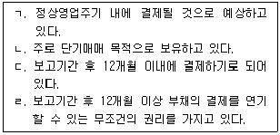
- ㄱ, ㄷ
- ㄴ, ㄹ
- ㄷ, ㄹ
- ㄱ, ㄴ, ㄷ
- ㄱ, ㄴ, ㄷ, ㄹ
(정답률: 54%)
87. (주)한국의 유동자산은 ￦2,500이고 유동부채는 ￦1,000이며 당좌자산은 ￦2,000이다. 다음과 같은 거래가 발생하였을 경우 유동비율과 당좌비율에 미치는 영향은? (단, 상품에 대해 실지재고조사법을 적용한다.)(순서대로 유동비율, 당좌비율)
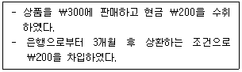
- 감소, 증가
- 증가, 불변
- 불변, 불변
- 불변, 증가
- 증가, 감소
(정답률: 25%)
88. (주)한국은 20×1년 9월 1일 1년분 보험료 ￦12,000을 지급하면서 비용으로 기록하였다. 보험료에 대한 기말 수정분개로 인한 영향으로 옳은 것은?
- 유동자산 ￦4,000이 증가한다.
- 당기순이익 ￦8,000이 감소한다.
- 부채비율이 하락한다.
- 유동비율이 하락한다.
- 비용 ￦4,000이 감소한다.
(정답률: 8%)
89. (주)한국의 수정전시산표를 통한 당기순이익은 ￦9,500이다. (주)한국의 기말 수정사항이 다음과 같을 때 수정후시산표상 당기순이익은?
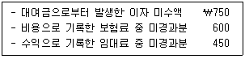
- ￦9,800
- ￦10,100
- ￦10,250
- ￦10,400
- ￦10,850
(정답률: 36%)
90. (주)한국의 20×1년 말 수정후시산표상 임차료는 ￦10,000이고 선급임차료는 ￦4,000이었다. 20×1년 초 선급임차료가 ￦2,000인 경우 (주)한국이 20×1년도에 현금으로 지급한 임차료는?
- ￦10,000
- ￦11,000
- ￦12,000
- ￦13,000
- ￦14,000
(정답률: 43%)
91. (주)한국은 20×1년 초 기계장치를 ￦45,000에 취득하였다. 취득당시 기계장치의 내용연수는 5년이었으며 잔존가치는 ￦3,000으로 추정되었다. (주)한국은 기계장치를 취득 후 연수합계법을 적용하여 감가상각을 해왔으나, 20×3년 초 정액법으로 변경하였으며 잔존가치는 없는 것으로 추정하였다. (주)한국이 20×3년도에 인식할 감가상각비는?
- ￦5,600
- ￦6,600
- ￦8,400
- ￦9,000
- ￦9,400
(정답률: 36%)
92. 20×1년도 시산표상의 차변합계액은 ￦70,000이고 대변합계액은 ￦79,500이었다. 다음의 오류사항을 반영한 후 시산표상 차변합계액은?
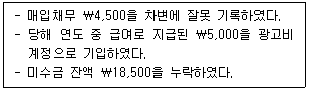
- ￦65,500
- ￦70,500
- ￦79,500
- ￦84,000
- ￦84,500
(정답률: 40%)
93. (주)한국은 20×1년 초 컴퓨터 판매를 시작하였다. 판매한 컴퓨터의 무상 수리서비스 제공을 위해 매출의 5%를 판매보증충당부채로 설정하고 있다. 20×1년도에 판매한 컴퓨터는 ￦30,000이며 판매보증비는 발생하지 않았다. 20×2년 5월 1일 판매보증비용으로 ￦1,800이 처음 지출되었을 경우 인식해야 할 판매보증비는?
- ￦0
- ￦300
- ￦800
- ￦1,500
- ￦1,800
(정답률: 47%)
94. (주)한국은 20×1년 초 건물 신축공사 계약을 체결한 후 공사를 진행하고 있다. 총 계약수익은 ￦9,000이고 3년 후 건물 완공시까지 추정총계약원가는 ￦6,000이다. 20×1년도에 발생한 계약원가는 ￦1,200이며 공사대금으로 ￦1,500을 수취하였다. 20×1년도에 인식할 계약이익은? (단, 공사계약의 수익인식은 진행기준을 따르며 진행률은 누적발생계약원가를 추정총계약원가로 나눈 비율을 사용한다.)
- ￦300
- ￦600
- ￦850
- ￦1,000
- ￦1,800
(정답률: 8%)
95. 다음 내용과 관련된 고객과의 계약에서 생기는 수익의 인식 단계는?
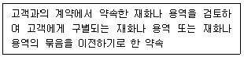
- 고객과의 계약의 식별
- 수행의무의 식별
- 거래가격의 산정
- 거래가격의 배분
- 수행의무 이행과 수익의 인식
(정답률: 36%)
96. (주)한국은 20×1년 4월 1일 기계장치 취득 시 수선비로 잘못 기록하였으며, 20×2년도 장부마감 전에 오류를 발견하였다. 기계장치와 관련된 자료가 다음과 같을 때 오류수정분개의 영향으로 옳은 것은? (단, 감가상각은 월할계산한다.)
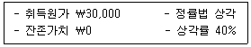
- 기계장치의 장부금액 ￦21,000이 증가한다.
- 수선비 ￦30,000이 감소한다.
- 감가상각비 ￦8,400이 증가한다.
- 감가상각누계액 ￦9,000이 증가한다.
- 당기순이익 ￦17,400이 감소한다.
(정답률: 14%)
97. (주)한국은 20×2년 중 ￦13,000의 매출채권을 대손처리하였고, 20×2년 말 매출채권 잔액의 5%를 기대신용손실로 추정하였다. (주)한국의 매출채권 잔액이 다음과 같을 경우, 20×2년도에 인식할 대손상각비는?
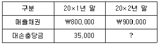
- ￦13,000
- ￦22,000
- ￦23,000
- ￦35,000
- ￦45,000
(정답률: 40%)
98. 20×1년 말 (주)한국의 당좌예금계정 잔액은 ￦90,000으로 은행으로부터 수령한 (주)한국의 은행조회서상 예금잔액과 일치하지 않았다. 불일치에 대한 원인이 다음과 같을 때, 정확한 당좌예금계정 잔액은?
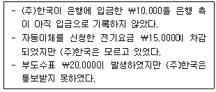
- ￦45,000
- ￦55,000
- ￦60,000
- ￦75,000
- ￦80,000
(정답률: 57%)
99. 기말 재고자산에 포함되지 않는 것은?
- 장기로 할부판매한 상품
- 위탁판매를 위하여 발송한 상품 중 수탁자가 창고에 보관중인 적송품
- 고객이 매입의사를 표시하지 않은 시용판매 상품
- 선적지인도조건으로 매입한 상품 중 기말 현재 운송중인 상품
- 도착지인도조건으로 매출한 상품 중 기말 현재 운송중인 상품
(정답률: 47%)
100. (주)한국의 20×1년 말 상품과 관련된 자료가 다음과 같을 때, 20×1년 말 상품의 장부금액은?
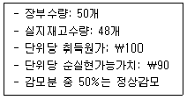
- ￦4,320
- ￦4,410
- ￦4,500
- ￦4,800
- ￦5,000
(정답률: 48%)
101. 기계장치와 관련된 지출 중 성격이 다른 것은?
- 생산량을 증가시키기 위한 보조장치의 부착
- 정상적인 성능을 유지하기 위한 윤활유의 교체
- 불량률을 감소시키기 위해 기존부품을 첨단부품으로 교체
- 성능을 증가시키는 핵심부품의 교체
- 내용연수를 연장시키기 위한 기존부품의 교체
(정답률: 19%)
102. (주)한국은 (주)대한이 보유하고 있는 토지(장부금액 ￦200,000, 공정가치 ￦300,000)를 취득하는 대가로 (주)대한에게 주식 50주(주당 액면금액 ￦5,000)를 발행하였다. 토지 취득시 취득세로 ￦5,000을 지출하였을 경우, 토지의 취득원가는?
- ￦200,000
- ￦2⑤,000
- ￦255,000
- ￦300,000
- ￦3⑤,000
(정답률: 34%)
103. 내용연수가 유한한 무형자산의 상각방법은 자산의 경제적 효익이 소비될 것으로 예상되는 형태를 반영하여야 하지만, 그 형태를 신뢰성 있게 결정할 수 없는 경우에 사용되는 상각방법은?
- 생산량비례법
- 연수합계법
- 이중체감법
- 정률법
- 정액법
(정답률: 40%)
104. (주)한국은 20×1년 초 기계장치(내용연수 5년, 잔존가치 ￦1,000)를 ￦11,000에 취득하여 정액법으로 감가상각하고 있다. 20×2년 말 이 기계장치에 대해서 손상이 발생하였고, 회수가능액은 ￦4,000으로 추정되었다. (주)한국이 20×2년 말에 인식할 손상차손은?
- ￦2,000
- ￦2,600
- ￦3,000
- ￦5,000
- ￦6,000
(정답률: 40%)
1⑤. 사채에 관한 설명으로 옳은 것은? (단, 사채는 연초에 발행하고, 이자는 매년 말 지급하는 것으로 가정한다.)
- 사채를 할인발행한 경우 사채할인발행차금 상각액은 시간이 흐를수록 매년 감소한다.
- 사채를 할증발행한 경우 사채할증발행차금 상각액은 시간이 흐를수록 매년 증가한다.
- 한국채택국제회계기준에서는 사채할인(할증)발행차금을 유효이자율법 외에 정액법으로 상각하는 것도 허용한다.
- 사채를 할인발행한 경우 이자비용은 시간이 흐를수록 매년 감소한다.
- 사채를 할증발행한 경우 이자비용은 시간이 흐를수록 매년 증가한다.
(정답률: 8%)
106. (주)한국의 20×1년 12월분 총급여액은 ￦50,000이다. 총급여액에는 원천징수할 소득세 ￦4,000이 포함되어 있다. (주)한국의 12월분 총급여와 관련한 기말 수정분개로 옳은 것은? (단, 급여는 다음 달 10일에 지급된다.)
- (차) 급여 46,000 (대) 미지급비용 46,000
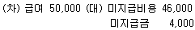
- (차) 급여 50,000 (대) 미지급비용 50,000
- (차) 급여 50,000 (대) 미지급금 50,000
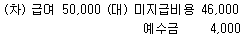
(정답률: 27%)
107. 충당부채와 우발부채에 관한 설명으로 옳은 것은?
- 충당부채는 해당 의무를 이행하기 위하여 경제적 효익이 있는 자원을 유출할 가능성이 매우 높아야 인식한다.
- 미래의 예상 영업손실은 충당부채로 인식할 수 있다.
- 충당부채와 우발부채는 동일하게 재무제표에 인식하고 주석으로 공시한다.
- 충당부채로 인식하는 금액은 현재의무를 보고기간 말에 이행하기 위하여 필요한 지출에 대한 최선의 추정치이어야 한다.
- 과거에 우발부채로 처리하였다면 미래 경제적 효익의 유출 가능성이 높아진 경우에도 충당부채로 인식할 수 없다.
(정답률: 14%)
108. (주)한국은 20×1년 1월 1일 유형자산을 취득하고 다음과 같이 대금을 지급하였다. 유효이 자율이 연 10%일 경우, (주)한국이 20×2년도에 인식할 이자비용은? (단, 연금현가계수는 2.4868(3년, 연 10%)이며, 단수차이가 발생할 경우 가장 근사치를 선택한다.)
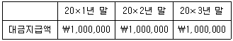
- ￦90,909
- ￦100,000
- ￦173,548
- ￦190,909
- ￦248,680
(정답률: 16%)
109. (주)한국의 20×1년 초 자산총액은 ￦1,000,000이고, 부채총액은 ￦600,000이며, 20×1년도 총포괄이익은 ￦50,000이다. 20×1년 중 자본과 관련된 거래가 다음과 같을 때 20×1년 말 자본총액은?
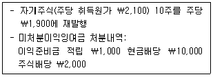
- ￦449,000
- ￦456,000
- ￦457,000
- ￦459,000
- ￦479,000
(정답률: 22%)
110. (주)한국은 보통주 10주(주당 액면금액 ￦5,000, 주당 발행가액 ￦6,000)를 ￦45,000에 매입 소각하였다. (주)한국이 보통주 매입 소각과 관련하여 손익계산서에 인식할 손익은?
- 손실 ￦15,000
- 손실 ￦5,000
- ￦0
- 이익 ￦5,000
- 이익 ￦15,000
(정답률: 29%)
111. 이익잉여금의 변동을 가져오지 않는 것은?
- 주식배당
- 현금배당
- 중대한 전기오류수정손익
- 회계정책변경으로 인한 누적효과
- 자기주식 취득
(정답률: 38%)
112. (주)한국의 20×1년 초 유통보통주식수는 15,000주이며, 우선주는 없다. 5월 1일과 9월 1일에 각각 보통주 5,000주를 공정가치로 유상증자하였다. (주)한국의 20×1년 당기순이익이 ￦5,000,000일 경우 기본주당이익은? (단, 가중평균유통보통주식수는 월할계산한다.)
- ￦125
- ￦200
- ￦225
- ￦250
- ￦333
(정답률: 44%)
113. (주)한국은 표준원가계산제도를 적용하고 있다. 20×1년 3월 직접재료의 단위당 구입가격과 제품생산에 실제 투입된 수량은 각각 ￦10.3과 4,000 kg이다. 동 기간 동안 실제 제품생산량은 1,000단위이다. 직접재료원가의 가격차이는 ￦400(유리)이고, 수량차이는 ￦2,080(불리)이었다. 제품 단위당 직접재료의 표준투입량(수량표준)은? (단, 재고는 없다.)
- 3.8 kg
- 4.0 kg
- 4.2 kg
- 4.4 kg
- 4.6 kg
(정답률: 16%)
114. (주)한국의 20×1년 재고자산은 다음과 같다. 당기 매출원가와 전환원가(가공원가)는 각각 ￦100,000과 ￦60,000이다. 당기 직접재료 매입액은?
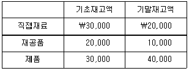
- ￦20,000
- ￦30,000
- ￦40,000
- ￦50,000
- ￦60,000
(정답률: 34%)
115. (주)한국은 보조부문A, B의 원가를 배부하기 위하여 단계배부법을 사용한다. 각 부문 간의 용역수수관계와 부문원가가 다음과 같을 때, 제조부문Y에 배부되는 보조부문A, B 원가 총액은? (단, 보조부문B의 원가를 먼저 배부한다.)
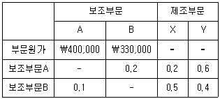
- ￦391,800
- ￦413,700
- ￦436,250
- ￦448,600
- ￦456,750
(정답률: 22%)
116. (주)한국은 직접노무시간을 기준으로 제조간접원가를 배부하는 개별원가계산을 적용하고 있다. 20×1년 3월 작업A에 대해 예상한 직접노무시간이 160시간이고, 실제 발생한 직접노무시간은 170시간이다. 20×1년 관련 자료가 다음과 같을 때, 20×1년 3월 정상원가계산과 실제원가계산 간에 작업A의 제조원가차이는?
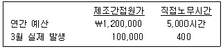
- ￦1,600
- ￦1,700
- ￦3,200
- ￦3,800
- ￦4,100
(정답률: 34%)
117. (주)한국은 제품A를 생산ㆍ판매하고 있으며, 월간 최대 생산량은 5,000단위이다. 20×1년 3월 (주)대한으로부터 제품A를 1,000단위 공급해달라는 특별주문을 받았다. 현재 월 4,500단위를 생산ㆍ판매하고 있으며, 단위당 시장판매가격은 ￦8,000이다. 제품A의 단위당 변동제조원가와 변동판매비와관리비는 각각 ￦2,500과 ￦1,000이며, 월 고정원가는 총 ￦7,000,000이다. (주)대한의 주문에 따른 변동제조원가는 기존과 동일하지만 변동판매비와 관리비는 기존의 10%만 발생한다. (주)한국이 동 주문을 수락하기 위해 필요한 부족수량은 기존 시장의 판매량에서 충당하여야 한다. (주)대한의 주문을 수락하기 위한 단위당 최소판매가격은?
- ￦4,850
- ￦5,300
- ￦5,880
- ￦6,500
- ￦7,100
(정답률: 22%)
118. 책임회계에 관한 설명으로 옳지 않은 것은?
- 책임회계단위의 성과평가시 예산과 실제 성과를 비교할 때, 고정예산은 고정원가 항목에 대한 예산이며, 변동예산은 변동원가 항목에 대한 예산을 말한다.
- 책임회계단위의 성과평가는 원칙적으로 통제가능성을 따라야 한다.
- 투자수익률로 투자중심점의 성과를 평가할 경우 회사전체의 이익극대화와 상충될 수 있다.
- 인사부문과 같은 지원부서는 원가중심점으로 분류된다.
- 경제적 부가가치에는 자기자본에 대한 자본비용도 포함된다.
(정답률: 18%)
119. (주)한국은 하나의 설비로 두 가지 마스크, KF80과 KF94를 생산할 수 있다. 각 마스크에 대한 수요는 무한하지만 설비의 총 가동시간에 제약이 따른다. 두 제품의 원가 및 관련자료가 다음과 같을 때, 어떤 생산배합에서 이익이 극대화되는가?
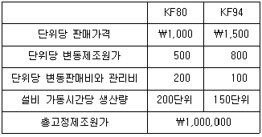
- KF80과 KF94를 4:6 생산
- KF80과 KF94를 5:5 생산
- KF80과 KF94를 6:4 생산
- KF80만 생산
- KF94만 생산
(정답률: 45%)
120. 변동원가계산과 전부원가계산에 관한 설명으로 옳지 않은 것은?
- 전부원가계산에서는 고정제조간접원가가 제품원가에 포함되며, 변동원가계산에서는 변동판매비와 관리비가 제품원가에 포함된다.
- 기초재고자산이 없고 당기 생산량과 판매량이 동일하다면 변동원가계산과 전부원가계산 하에서의 이익은 동일하다.
- 변동원가계산에서는 제조원가뿐만 아니라 판매비와관리비도 변동원가와 고정원가로 분리하여야 한다.
- 변동원가계산은 외부공시용 재무제표 작성을 위해 사용될 수 없다.
- 변동원가계산이 전부원가계산보다 단기의사결정과 성과평가에 더 유용하다.
(정답률: 8%)